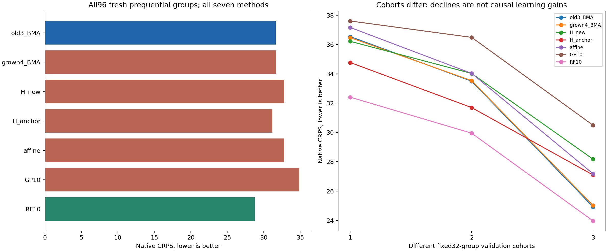

扩展4H平均CRPS 31.673261，旧3H 31.653284，主终点差值 +0.019977，没有改善。自动提出f_C_plus_N的单模型为32.805744，预定O_present对照31.187756；同信息全10维森林28.773427最好，GP为34.861650。不能用本轮证明自动生长有效，也不能只选较弱参照。范围与信息不同，不能把上一cohort34.12到本轮31.67当进步。

旧40组只作开发训练，5折各32训练、8留出，全部响应/代理预处理仅折内拟合；先按metadata固定anchor，再由有界CDF残差关联选一项，锁定提议后才读新组。新H加入affine均值，完整NIG残差保留；真实反馈最终将该H权重降到约0.003。该现象不等于证伪该物理关联，也没有修复到森林水平。
需要研究的两个设计问题：选特征的CDF残差相关性未直接优化原单位CRPS；候选筛选对fullquad投影，而实际新模型使用affine＋一项。它们是可检验原因，尚非本次失败的确定因果解释。下一步应保留强参考的完整分布，只研究必要的低维概率修正，不在当前128组改参后称新确认。
| 方法 | 批次（0为总体） | 组数 | CRPS | 中位数RMSE | 90%覆盖 | 90%宽度 |
|---|---|---|---|---|---|---|
| old3_BMA | 0 | 96 | 31.653284 | 57.419463 | 0.947917 | 193.694523 |
| old3_BMA | 1 | 32 | 36.543039 | 66.552136 | 0.875000 | 194.697548 |
| old3_BMA | 2 | 32 | 33.493779 | 59.471605 | 0.968750 | 194.165111 |
| old3_BMA | 3 | 32 | 24.923034 | 43.873972 | 1.000000 | 192.220910 |
| grown4_BMA | 0 | 96 | 31.673261 | 57.493735 | 0.947917 | 193.999652 |
| grown4_BMA | 1 | 32 | 36.468099 | 66.529067 | 0.875000 | 195.229820 |
| grown4_BMA | 2 | 32 | 33.533257 | 59.567947 | 0.968750 | 194.074489 |
| grown4_BMA | 3 | 32 | 25.018425 | 44.069622 | 1.000000 | 192.694647 |
| H_new | 0 | 96 | 32.805744 | 59.437903 | 0.937500 | 194.674069 |
| H_new | 1 | 32 | 36.216038 | 66.484718 | 0.843750 | 197.649645 |
| H_new | 2 | 32 | 34.025415 | 60.676386 | 0.968750 | 192.582452 |
| H_new | 3 | 32 | 28.175779 | 49.967503 | 1.000000 | 193.790110 |
| H_anchor | 0 | 96 | 31.187756 | 57.003034 | 0.927083 | 189.307992 |
| H_anchor | 1 | 32 | 34.771218 | 64.588098 | 0.843750 | 191.133997 |
| H_anchor | 2 | 32 | 31.696211 | 57.099327 | 0.968750 | 190.618556 |
| H_anchor | 3 | 32 | 27.095838 | 48.125691 | 0.968750 | 186.171425 |
| affine | 0 | 96 | 32.791291 | 59.368570 | 0.937500 | 194.317456 |
| affine | 1 | 32 | 37.163023 | 67.626385 | 0.843750 | 195.113433 |
| affine | 2 | 32 | 34.029770 | 60.376072 | 0.968750 | 195.800772 |
| affine | 3 | 32 | 27.181080 | 48.531259 | 1.000000 | 192.038164 |
| GP10 | 0 | 96 | 34.861650 | 61.662232 | 0.927083 | 214.639173 |
| GP10 | 1 | 32 | 37.604430 | 67.018745 | 0.875000 | 209.962840 |
| GP10 | 2 | 32 | 36.487631 | 64.420973 | 0.937500 | 216.445829 |
| GP10 | 3 | 32 | 30.492891 | 52.584396 | 0.968750 | 217.508848 |
| RF10 | 0 | 96 | 28.773427 | 53.683965 | 0.947917 | 180.069927 |
| RF10 | 1 | 32 | 32.405836 | 60.018282 | 0.875000 | 175.947875 |
| RF10 | 2 | 32 | 29.949171 | 55.283036 | 0.968750 | 193.657531 |
| RF10 | 3 | 32 | 23.965275 | 44.581343 | 1.000000 | 170.604375 |
公开汇总（逐材料内容保留本地） · 实际协议的公开摘录 · 全部672评分的独立核查摘要 · 全部8项开发提议分数 · 全部28汇总
固定批次里的组数不是独立研究轮数；覆盖、SE和小差异均为本次开发描述，不认证未来校准、材料普适性或录用。旧MLST及此前完整资源均不改。生成/预测不冒充测量。